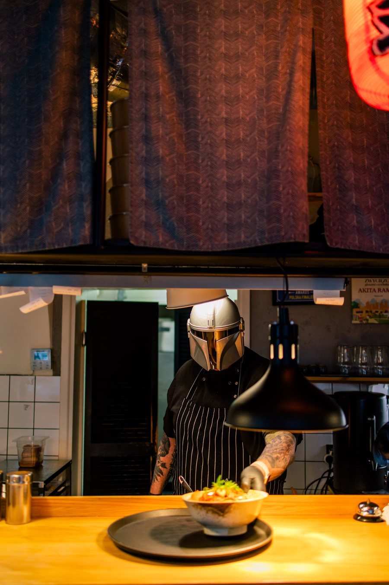
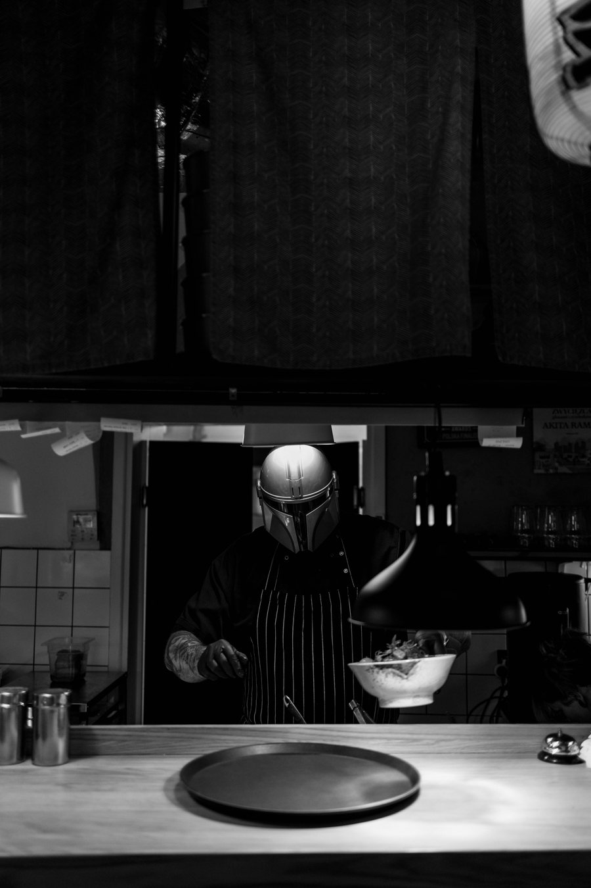

Jesteśmy ekipą zakręconą na punkcie ramenu. Dwa lokale — Kraków i Gdańsk — jeden ramenowy fanatyzm. Stawiamy na autentyczne smaki, długo gotowane buliony i atmosferę, do której chce się wracać.
Akita Ramen to przede wszystkim ludzie — nasz zespół i nasi goście. IN RAMEN WE TRUST.
Ludzie, którzy gotują Wam ramen. (zdjęcia + imiona — do uzupełnienia)

